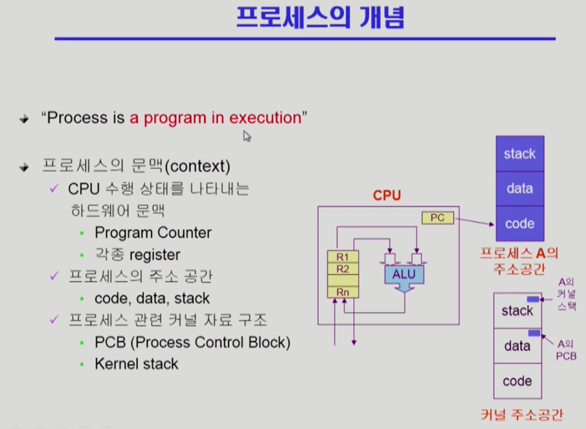
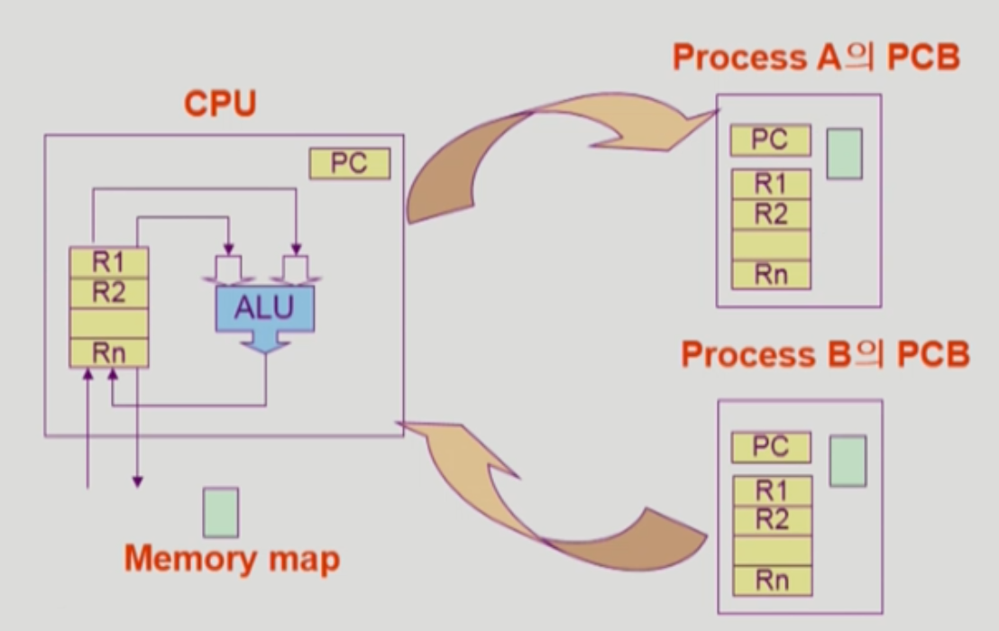

목차
프로세스의 개념
프로세스란?
프로세스란 실행 중인 프로그램을 뜻함
디스크에 실행파일의 형태로 존재하던 프로그램이 메모리에 올라가서 실행되기 시작하면 프로세스가 됨
프로세스는 CPU를 획득하여 자신의 코드를 수행,
프로세스의 문맥(process context)의 필요성
프로세스의 문맥이란 프로세스가 현재 어떤 상태에서 수행되고 있는지 정확히 규명하기 위해 필요한 정보
여러 프로세스가 실행되면 프로세스마다 CPU를 번갈아가며 사용
따라서 CPU 재보유하여 명령의 수행을 재개할 때 직전 수행 시점의 정확한 상태를 재현해야 함
이때 정확한 재현을 위해 필요한 것이 프로세스의 문맥
프로세스 문맥의 세가지 분류

하드웨어 문맥
CPU의 수행 상태를 나타내는 PC값과 각종 레지스터들
프로세스의 주소 공간
프로세스가 보유한 독자적 주소공간인 코드, 데이터, 스택
커널상의 문맥
프로세스를 관리하기 위한 자료구조인 PCB와 커널스택
프로세스의 상태
프로세스의 세가지 상태 - 실행, 준비, 봉쇄
실행 상태
프로세스가 CPU를 보유하고 기계어 명령을 처리하고 있는 상태
매 시점마다 실행 상태에 있는 프로세스는 오직 하나 뿐
준비 상태
CPU만 보유하면 당장 명령을 실행할 수 있지만 CPU를 할당받지 못한 상태
봉쇄 상태
당장 명령을 실행할 수 없는 상태
주로 요청한 입출력 작업이 처리중일 때 프로세스는 봉쇄 상태에 머무름
중지 상태
외부적인 이유로 프로세스의 수행이 정지된 상태
외부에서 재개시키지 않는 이상 다시 활성화 될 수 없음
중지 상태의 프로세스는 메모리를 통째로 빼앗기고 디스크로 스왑 아웃 됨 (중기 스케쥴러에 의해 되는 경우가 대표적)
- 중지준비
- 중지봉쇄
그 외의 상태
프로세스가 생성중일 때 - 시작(new) 상태
프로세스가 종료중인 상태 - 완료(terminated) 상태
프로세스 제어블록
프로세스 제어블록(PCB)의 구성요소
프로세스의 상태(process state)
CPU를 할당해도 되는지의 여부를 결정하기 위해 필요
프로그램 카운터(program counter)의 값
다음에 수행할 명령의 위치를 가리킴
CPU 레지스터(CPU register)의 값
CPU 연산을 위해 현 시점에 레지스터에 어떤 값을 저장하고 있는지를 나타냄
CPU 스케쥴링 정보(CPU scheduling information)
CPU 스케쥴링을 위해 필요
메모리 관리 정보(memory management information)
메모리 할당을 위해 필요
자원 사용 정보(accounting information)
사용자에게 자원 사용 요금을 계산하여 청구하는 등의 용도에 의해 필요
입출력 상태 정보(I/O status information)
프로세스가 오픈한 파일 정보 등 프로세스 입출력 관련 상태 정보를 나타냄
문맥교환
문맥교환(content switch)의 의미
문맥교환이란 하나의 사용자 프로세스로부터 다른 사용자 프로세스로 CPU의 제어권이 이양되는 과정을 뜻함
문맥교환은 타이머 인터럽트, 프로세스의 입출력 요청, 다른 조건을 충족하지 못해 CPU를 회수당하고 봉쇄 상태가 되는 경우에 발생

프로세스 스케쥴링을 위한 큐
준비 큐(ready queue)
CPU를 기다리는 프로세스들을 줄 세우기 위한 큐
장치 큐(device queue)
특정 자원을 기다리는 프로세스들을 줄 세우기 위한 큐
소프트웨어 자원을 기다리는 큐
스케쥴러
스케쥴러의 뜻
어떤 프로세스에게 자원을 할당할지를 결정하는 운영체제 커널의 코드
스케쥴러의 종류
장기 스케쥴러(작업 스케쥴러)
어떤 프로세스를 준비 큐에 진입시킬지 결정하는 역할
프로세스에게 메모리를 할당시키는 역할
처음 프로세스가 생성되면 시작 상태를 거쳐 준비 상태에 이르게 되는데 장기 스케쥴러는 이때 어떤 큐에 삽입할지 결정
특성
수십 초 내지 수 분 단위로 가끔 호출되므로 속도가 빠르지 않아도 됨
메모리에 동시에 올라가 있는 프로세스의 수를 조절하는 역할(시작 상태의 프로세스에게 메모리 할당을 승인할지 여부를 장기 스케쥴러가 결정하기 때문
현대의 시분할 시스템에서는 거의 사용되지 않음 (자원이 매우 빈약하던 과거에 쓰였었음)
현대에는 시작 상태가 되면 곧바로 그 프로세스에 메모리를 할당해서 준비 큐에 넣어줌
중기 스케쥴러
너무 많은 프로세스에게 메모리를 할당해 시스템의 성능이 저하되는 경우에 이를 동적으로 조절하기 위해 추가된 스케쥴러
스왑 아웃 : 너무 많은 프로세스가 메모리에 적재되어 프로세스당 보유 메모리양이 극도로 적어지면 메모리에 올라와 있는 프로세스 중 일부를 선정해 이들로부터 메모리를 통째로 빼앗아 그 내용을 디스크 스왑 영역에 저장하는 것
스왑 아웃 우선순위가 가장 높은 것은 봉쇄 상태의 프로세스들
이 외에도 타이머 인터럽트가 발생해 준비 큐로 이동하는 프로세스도 스왑 아웃 시킴
단기 스케쥴러(CPU 스케쥴러)
준비 상태의 프로세스 중 어떤 프로세스를 다음번에 실행 상태로 만들 것인지 결정
여러 프로세스 중 어떤 프로세스에 CPU를 할당할 것인가를 결정
타이머 인터럽트 발생 시 단기 스케쥴러가 호출됨
특성
밀리초 단위로 매우 빈번히 호출되므로 속도가 빨라야 함